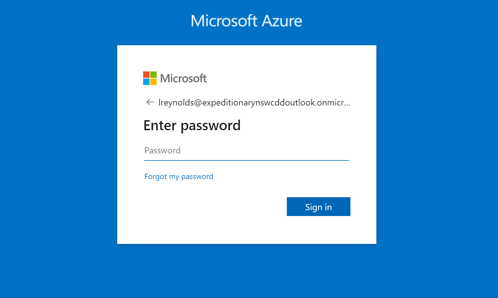

Go to this link: Azure Home. If you are working on NMCI, you may have to open an inPrivate window so that it allows you to chose which account to sign in with.
 < p> Log on with your temporary password, then follow prompting to create a new oneOn the home page, click on the "Virtual Machines" Icon, then click on the plus button on the left side of the page and select "Create New Machine"
For much of the VM configuration, the default options are correct. The following settings need to be set correctly: